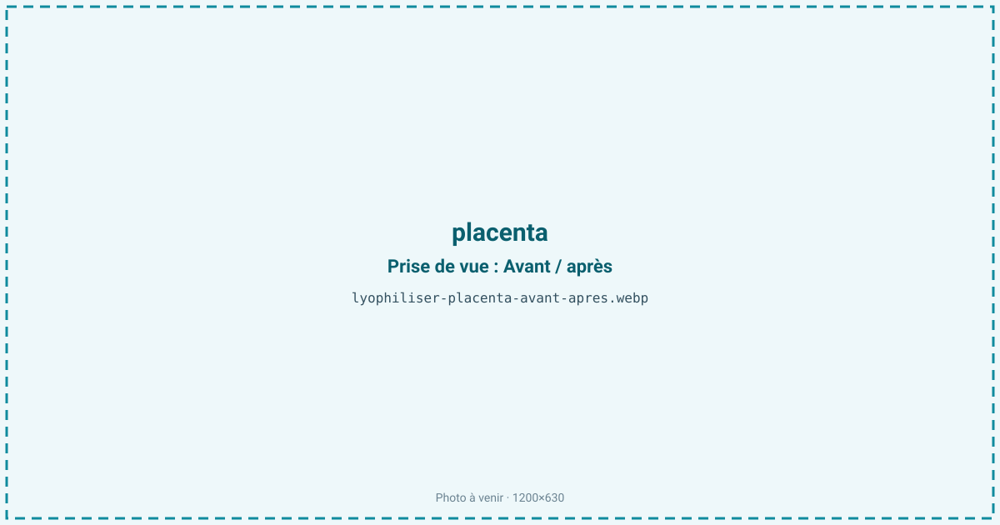
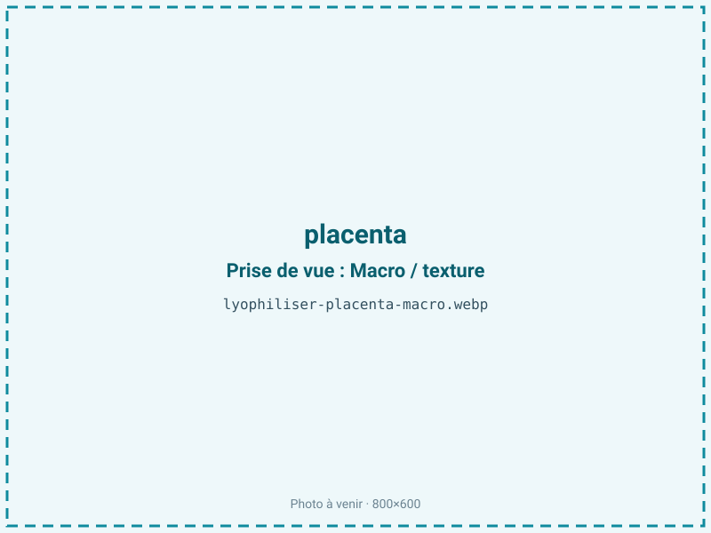
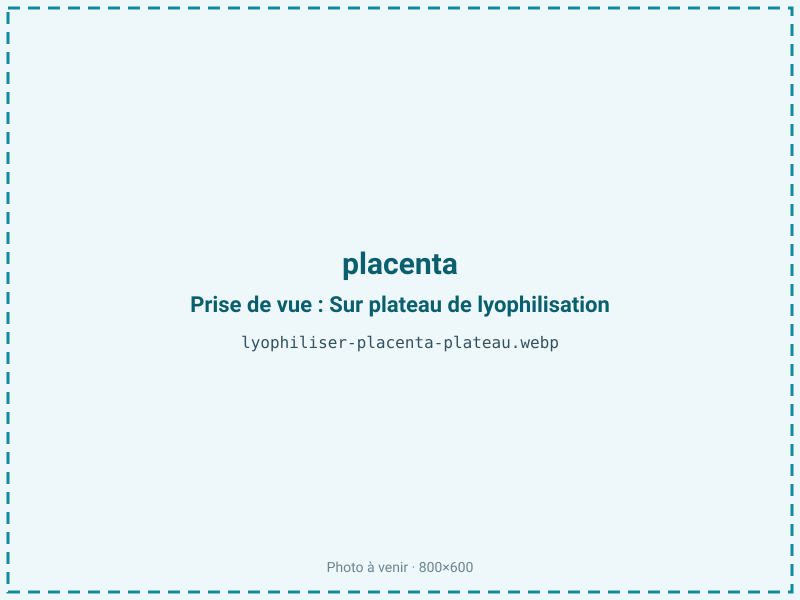
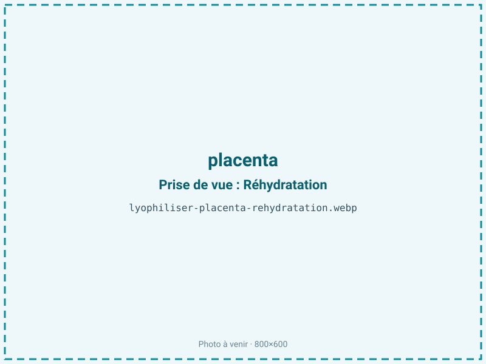

Lyophiliser un placenta
Le placenta se dégrade vite et doit être stabilisé sans chaleur pour l'encapsulation. La lyophilisation en retire l'eau à froid, dans un cadre d'hygiène strict, et donne une poudre sèche destinée aux gélules. Elle préserve les composés thermosensibles bien mieux qu'une déshydratation à chaud.

En bref
Comment placenta se comporte à la lyophilisation
Le placenta est un organe vasculaire riche en sang, à environ 80 % d'eau, chargé de protéines, de fer héminique et de composés bioactifs — hormones, facteurs de croissance — sensibles à la chaleur. Sa fraction lipidique, de 2 à 10 %, s'oxyde d'autant plus vite que le fer présent, comme le cuivre chez les mollusques, catalyse le rancissement.
À la congélation, une prise rapide limite la taille des cristaux et préserve le tissu vasculaire fragile. À la sublimation, l'eau part et concentre protéines et minéraux ; le tissu, mou et sanguin au départ, devient friable. Le front de séchage impose des tranches fines (autour de 5 mm) pour un séchage homogène. Certains protocoles, inspirés de la médecine traditionnelle chinoise, prévoient une cuisson vapeur préalable qui modifie la couleur, raffermit le tissu et réduit la charge microbienne, mais dénature une partie des bioactifs — d'où le choix fréquent du cru pour préserver ces composés.
Paramètres de cycle
Dans un protocole d'hygiène et de traçabilité stricts, et avec une chaîne du froid maîtrisée, trancher le tissu à environ 5 mm, puis congeler rapidement à −30 voire −40 °C. En sublimation, conduire une clayette modérée, sans excès de chaleur, pour ne pas dénaturer les hormones et facteurs de croissance ; enchaîner sur un palier secondaire pour abaisser l'humidité.
La cible d'aw de 0,20 à 0,30 répond aux exigences de l'encapsulation : une poudre très sèche s'écoule bien et préserve l'intégrité des gélules. Cette valeur est toutefois plus basse que l'optimum oxydatif de la fraction grasse (voir conservation) : c'est un compromis assumé entre stabilité de la gélule et protection des lipides, que le conditionnement barrière vient compenser. Un contrôle d'aw en fin de cycle sécurise chaque lot personnel.
Pièges connus
- Protocole d'hygiène et traçabilité stricts.
- Chaîne du froid impérative avant traitement.



Variantes & provenance
Le principal facteur est le traitement préalable : un placenta cru préserve au mieux les composés bioactifs, tandis qu'une cuisson vapeur (méthode traditionnelle) raffermit le tissu, en modifie la couleur et abaisse la charge microbienne au prix d'une partie de ces composés. L'état à l'entrée compte : frais et traité sous chaîne du froid, ou congelé puis décongelé. La taille varie selon la grossesse, et l'on choisit de traiter ou non le cordon et les membranes. Chaque placenta étant unique et nominatif, il n'y a pas de lot mélangé : la traçabilité individuelle est totale.
Conservation & DLUO
Le placenta contient une fraction lipidique de 2 à 10 % : l'optimum de stabilité oxydative se situe entre aw 0,30 et 0,50, et en dessous de 0,30 on retire la monocouche d'eau qui protège les lipides, ce qui accélère le rancissement — d'autant que le fer présent catalyse l'oxydation. Or l'encapsulation impose une aw de 0,20 à 0,30 pour la tenue des gélules : ce compromis, plus sec que l'optimum oxydatif, rend le conditionnement barrière et le stockage au frais non négociables. Comptez 12 à 24 mois en gélules, à l'abri de l'humidité et de la lumière, idéalement au frais puisque la vitesse d'oxydation double environ tous les 10 °C. L'hygiène et la traçabilité, ici, priment sur toute autre considération.
12 à 24 mois en gélules, à l'abri de l'humidité.
Estimez selon votre emballage :
Face aux autres procédés de séchage
Dans cette niche, le procédé concurrent est le déshydrateur à chaud (50 à 70 °C), courant pour l'encapsulation maison : il dénature davantage les hormones, les facteurs de croissance et les protéines, et donne une poudre plus grossière. Le micro-ondes sous vide chauffe lui aussi la matière. La lyophilisation, sans montée en température, conserve mieux les composés thermosensibles et produit une poudre fine, facile à encapsuler. Pour un produit à forte charge symbolique et sanitaire, l'absence de chaleur et le cadre contrôlé du froid font la différence.
Marchés & applications
Encapsulation (placentophagie) pour les jeunes mères, prestations proposées par des doulas et des spécialistes de l'encapsulation, conservation personnelle (teinture mère, empreinte, garde du cordon). Les clients types sont les prestataires d'encapsulation et les doulas travaillant en réseau avec des sages-femmes, ainsi que les particuliers. C'est un marché de niche, à cadre réglementaire et sanitaire strict, où l'hygiène et la traçabilité individuelle priment.
- Encapsulation (placentophagie)
- Conservation personnelle
Questions fréquentes — placenta
Le placenta est-il traité cru ou cuit ?
Les deux existent : le cru préserve au mieux les composés bioactifs, la cuisson vapeur (méthode traditionnelle) raffermit le tissu et réduit la charge microbienne au prix d'une partie de ces composés.
Combien de gélules obtient-on ?
Le ratio est d'environ 4:1 : un placenta à 80 % d'eau donne une poudre concentrée, soit couramment de l'ordre de 100 à 200 gélules selon sa taille.
Pourquoi le froid plutôt qu'un déshydrateur ?
Parce que la chaleur d'un déshydrateur dénature les hormones et facteurs de croissance thermosensibles ; le froid les préserve et donne une poudre plus fine.
Comment l'hygiène est-elle garantie ?
Par une chaîne du froid stricte, un protocole dédié et une traçabilité individuelle : chaque placenta est nominatif et jamais mélangé à un autre.
Combien de temps se conservent les gélules ?
12 à 24 mois à l'abri de l'humidité et de la lumière, de préférence au frais, car la fraction grasse s'oxyde avec le temps.
Pourquoi ne pas sécher davantage la poudre ?
Parce qu'en dessous d'aw 0,30, on retire la monocouche d'eau qui protège les lipides et l'on accélère le rancissement ; l'aw d'encapsulation reste un compromis compensé par la barrière.
La chaîne du froid est-elle indispensable ?
Oui, impérativement : le placenta est un tissu sanguin périssable qui doit rester au froid avant traitement pour des raisons sanitaires.
Prochaine étape : envoyez-nous 200 g
Vous avez les repères du placenta. La suite logique : nous envoyer un échantillon et repartir avec une fiche technique sur votre produit — rendement, aw finale, coût au kilo.
Tester du placenta — 250 à 500 €Déductible de votre premier lot.